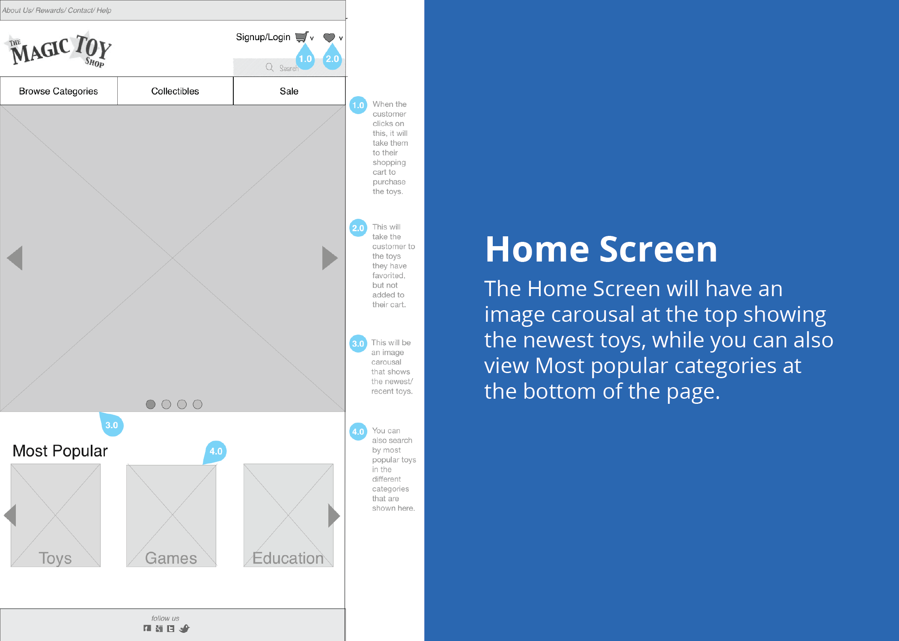
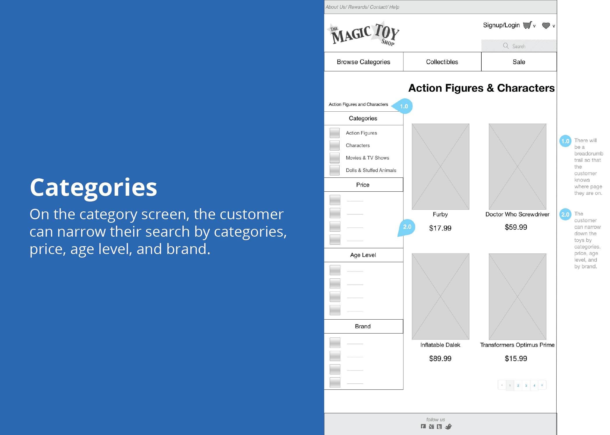

The Magic Toy Shop
Ecommerce Website
My Role: User Experience and Visual Design
The Problem: The Magic Toy Shop wanted a website that conveyed their values and personality, that catered to both children and adults.
The Research Phase
Using the given personas and conducting some user research, I was able to get a feel of what users liked in an online toy shop. Most people told me that the reason they preferred visiting toy shops to purchasing toys online was that there was something magical about the toy shops. I decided to look at some different online toy shops such as ToyZoo and ToysRUs to get a feel of what others were doing. I compared content, images, color schemes, and anything else to see if any of that helped in creating this magical experience. Taking bits and pieces from different online toy shops, I found I now had a starting point.
The Ideation Phase
To have an effective website for The Magic Toy Shop, I knew I would have to find a way to convey the same emotions parents and kids had when visiting a toy shop to the website. Toy stores have a lot of content that needs to be put in a website, so using information architecture and cardsorting I was able to best group all the toys and make it as easy and efficient as possible. Once the content was all laid out, I started to sketch out the different pages and then went on to wireframing and prototyping.
Initial Sketches
Initial Sketches
The Iteration Phase
To make sure I was properly portraying The Magic Toy Shop's values in the website, I made sure to get feedback throughout every step in the process. Getting feedback after every step in the process helped to make sure I was on the right path the whole time and that the content on the website was put together in a logical way. There were times when I grouped things together or worded things in way that seemed straightforward, but through usability testing, I found that what was clear to me, was not necessarily clear to someone else. Using all of the information I gathered from testing, I was able to make some iterations on my prototype.
Final Wireframes
Final Wireframes
Final Wireframes
Reflection and Next Steps
The main lesson I learned from this project was that what is logical to me isn't necessarily what seems logical to others. Everyone has their own thought processes and own desired ways to perform actions. By soliciting feedback at every stage in the process, I was able to get a clear idea of what users preferred and iterate my prototype to help users have a more seamless way of browsing an online toy store. For the future, I will be even more aggressive when it comes to creating feedback loops, as the constant lessons learned from users was pivotal in creating a better user experience.